DAN
International UGC creator with a proven track record across Brazil and LATAM — now based in London, bringing that same raw, authentic storytelling to every project.
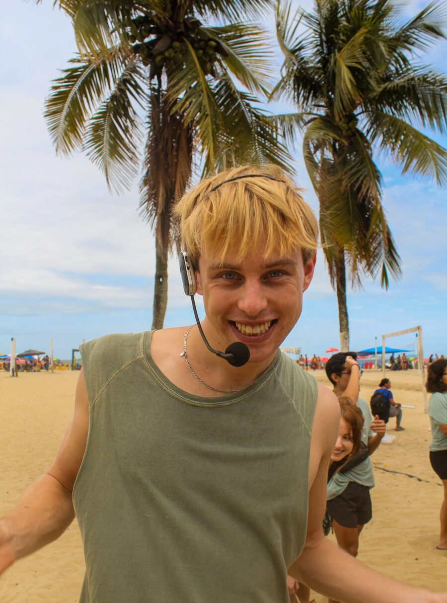
Hey, I'm Dan
I spent several years living and creating content in Rio de Janeiro before moving back home to London. I film, edit, and present short-form video for Instagram and TikTok. In Brazil, I created paid UGC for brands including Naveia, ASA Açaí, and KHOR Cosmetics, plus high-end restaurants like Gurumê, alongside building my own content brand, @dansdigitaldiaries, through street interviews and highlight reels.
I'm also the founder and host of Common Ground, a 250+ member social club in Rio de Janeiro, where I create event content and manage brand partnerships. My signature format is street interviews: stopping real people for raw, unfiltered reactions and opinions on camera. That same energy and eye for authentic storytelling is what I bring to every project, wherever I am.
Prefer more control? I can also run guided street interviews with prompted questions to hit specific talking points.
Recent Work
A selection of UGC content created for past collaborations.
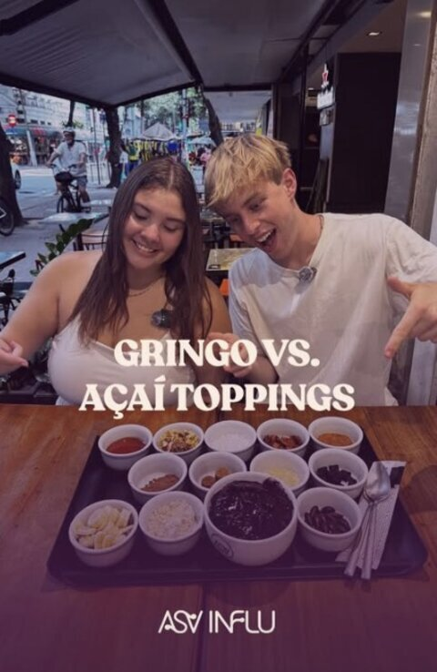
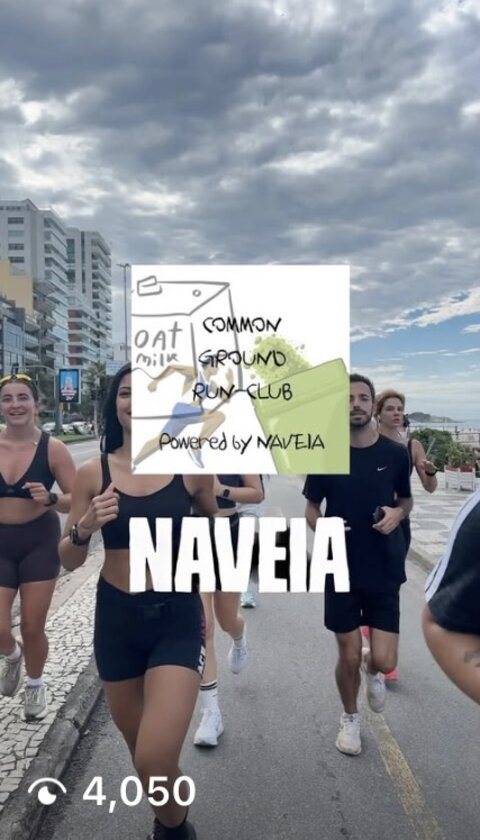
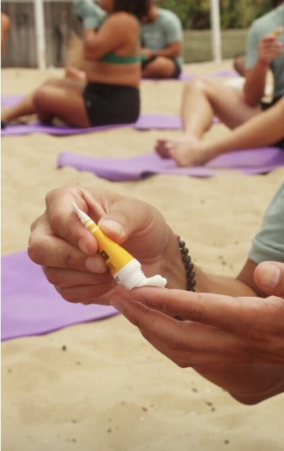
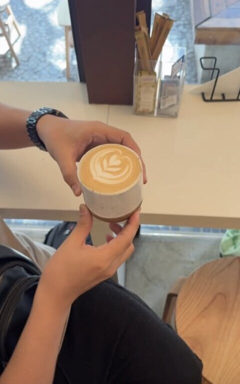
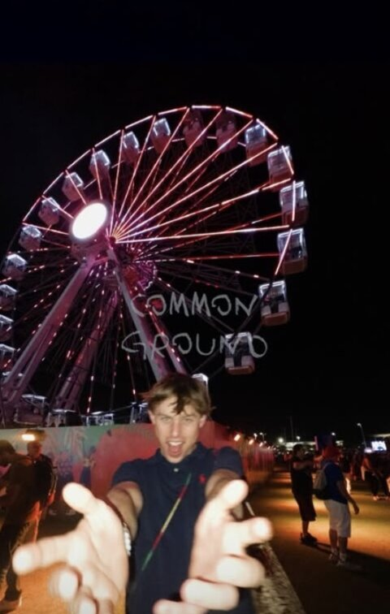
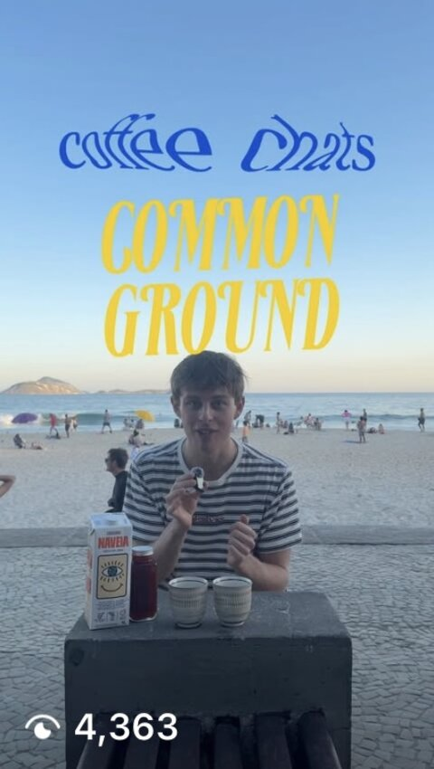
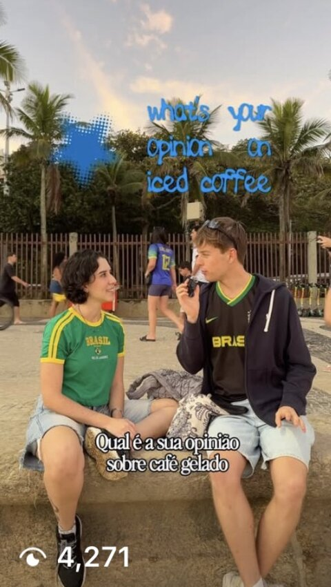
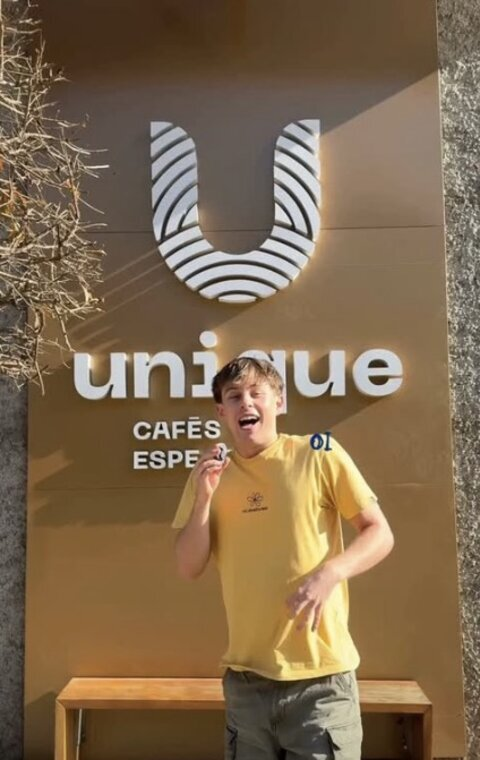
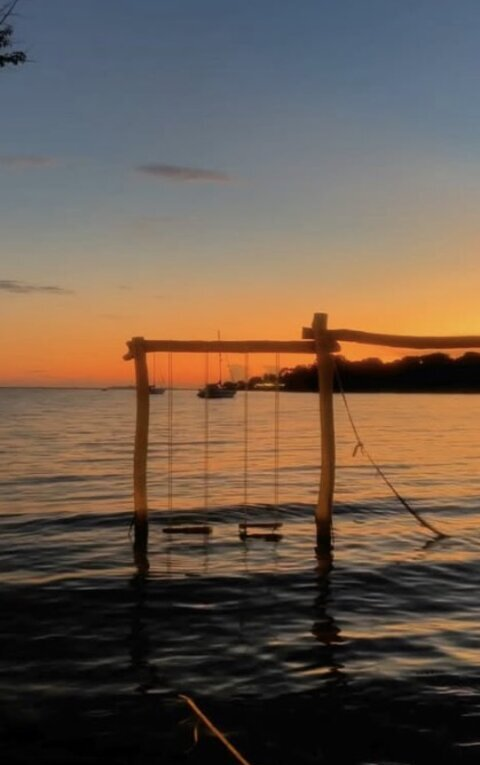
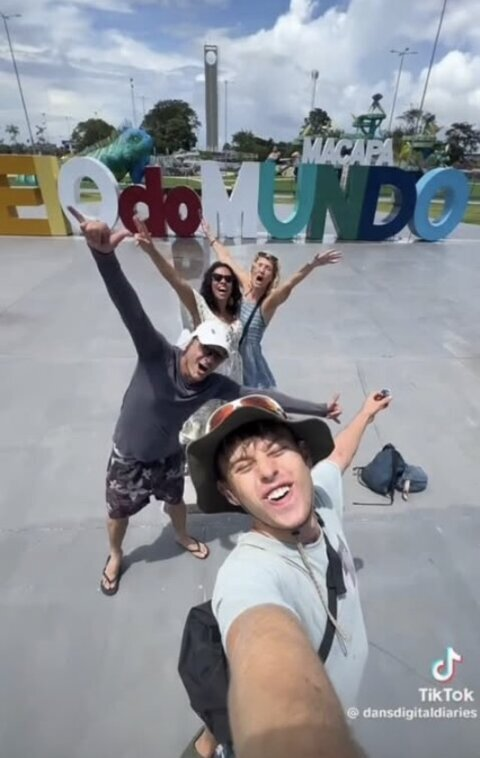
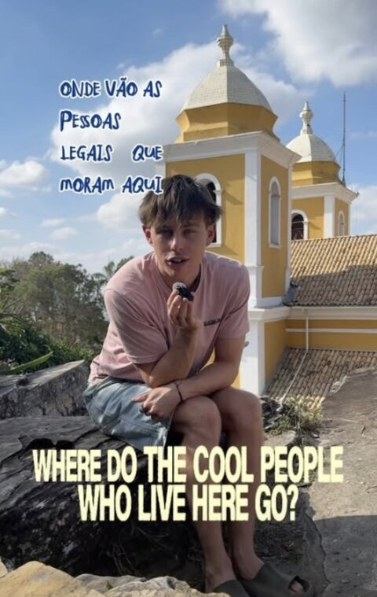
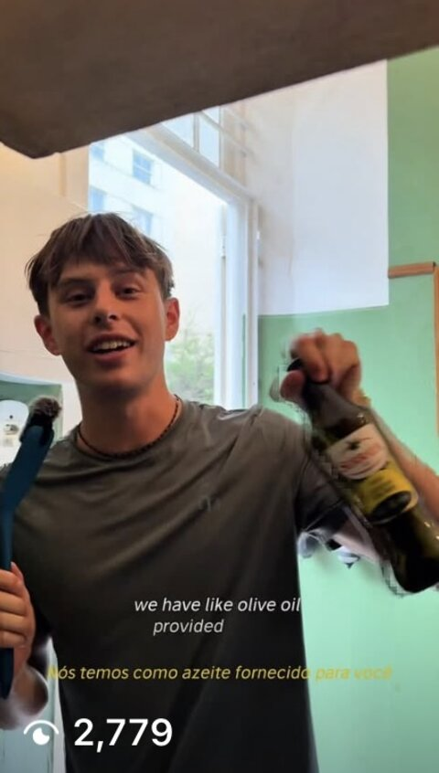
What Brands Say
“I love Dan’s content because he brings such a fresh, young perspective to Brazil and the incredible lifestyle we have here. He has a great eye for what’s new and interesting, while still appreciating what makes Rio so special. I especially love seeing how Naveia naturally fits into his everyday life and becomes part of the lifestyle he shares.”
“A espontaneidade do Daniel para trabalhar com as câmeras é maravilhosa. A capacidade de mostrar os atrativos dos lugares. Habilidade de poder integrar outras pessoas a colaborar com a ideia que ele tem.”
“Daniel’s spontaneity working with cameras is wonderful. His ability to show off what makes a place special. His ability to bring other people in to collaborate on the idea he has.”
“Dan, thank you so much for delivering the content! It turned out incredible, everyone in the team here at ASA loved it :)”
Let's Work Together
Have a campaign in mind? Reach out and I'll get back to you within 48 hours.